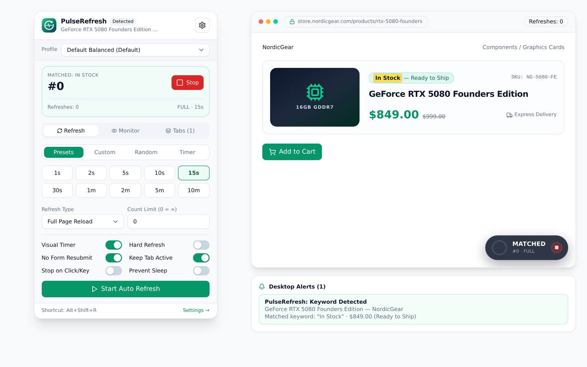
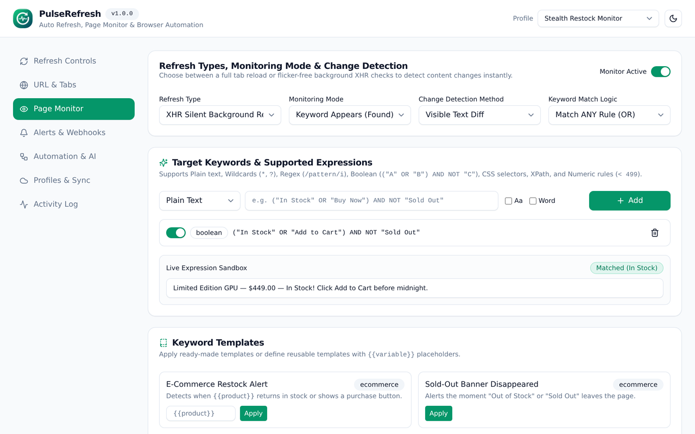
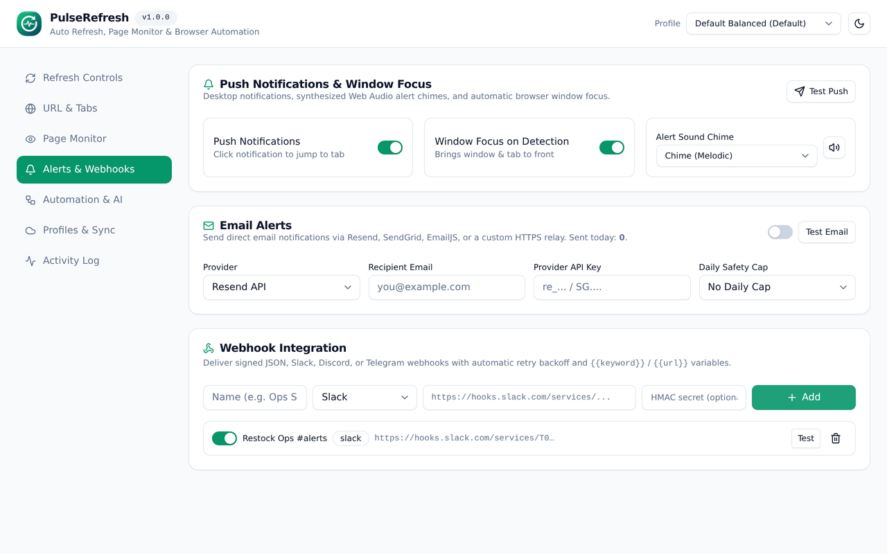

Auto refresh
Preset, millisecond-precise, randomized and countdown intervals, with a visual on-page timer you can style.
Auto-refresh pages, watch them for changes, and fire off alerts or macros — from one lightweight extension that keeps your data in your browser.
Free and open source · No account required · Chrome, Edge, Brave, Arc and Firefox

Seven categories of tools that work together — with no backend, no account and nothing watching your browsing in the background.
Preset, millisecond-precise, randomized and countdown intervals, with a visual on-page timer you can style.
Watch a page or a single element for keywords, regex, boolean or numeric rules. Silent XHR checks avoid tab flicker.
Desktop notifications, custom sounds, email, or signed Slack, Discord, Telegram and HTTPS webhook payloads.
Macros, custom scripts and keyboard shortcuts. The optional AI script builder also runs as an offline compiler.
Save named configurations, export a JSON backup, and sync selected settings through your own browser account.
No analytics, no ads, no remote code. Everything stays local unless you explicitly connect a service.
No sign-up, no configuration file, no waiting on a server.
Add PulseRefresh to your browser and pin the icon so the toolbar popup is one click away.
Choose the URLs, the refresh interval and what counts as a change — a keyword, an expression or a content difference.
Pages refresh and changes trigger your alerts or macros. Interaction detection can pause a reload while you are typing.
The full options dashboard and the tools behind the toolbar icon.


PulseRefresh stores settings in your browser and makes network requests only to places you configure. No analytics, no data sales, no developer-run tracking server.
No. Page checks, snapshots and interaction listeners run locally. Outbound requests go only to URLs, webhooks, email relays or AI endpoints that you enter yourself.
No account and no server are required. You can export a JSON backup at any time from Settings → Profiles & Sync.
Chrome, Edge, Brave and Arc use the Manifest V3 build; Firefox uses a separate build. Both are produced from the same source.
Uninstalling removes all locally stored extension data from your browser. There is no remote copy to delete.